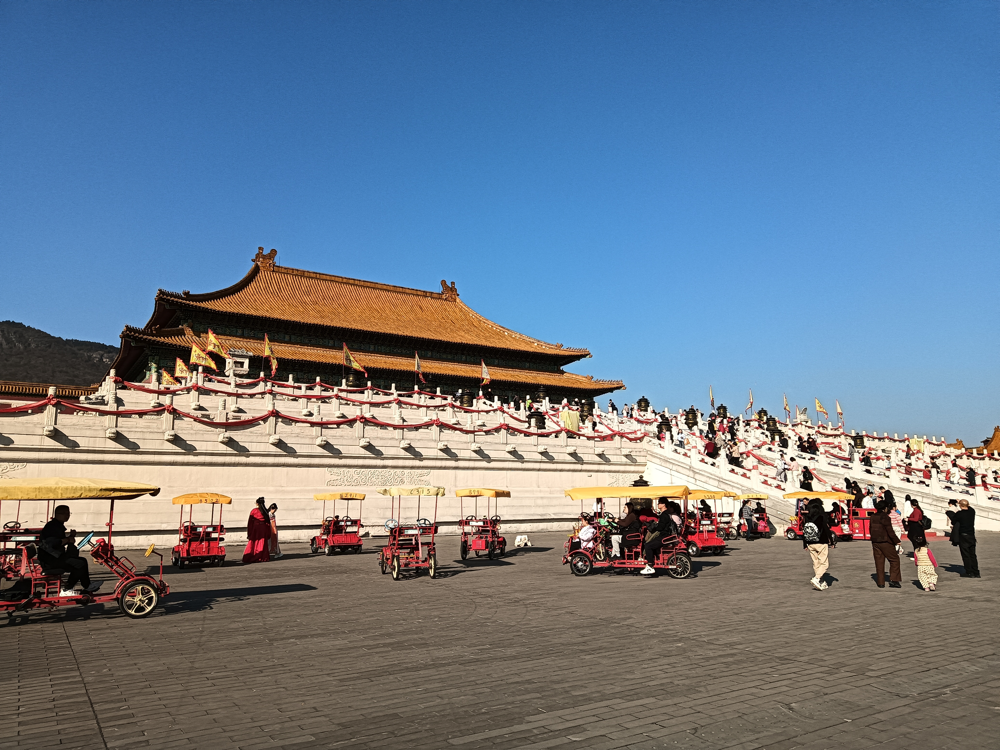
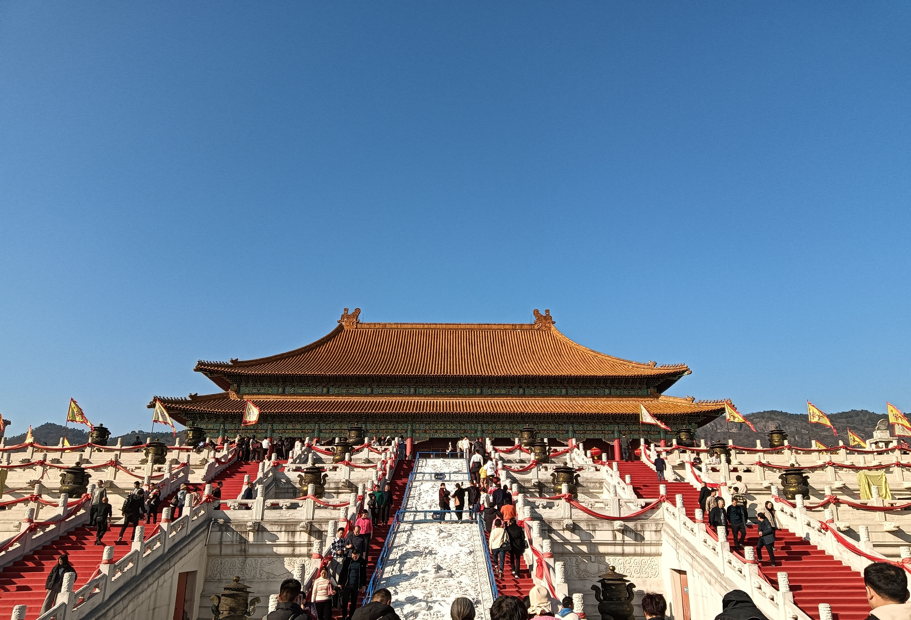
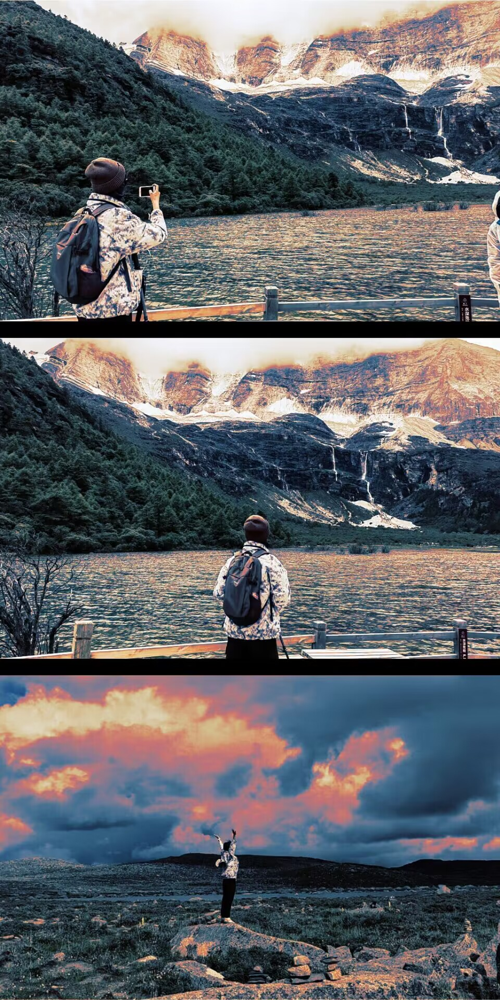
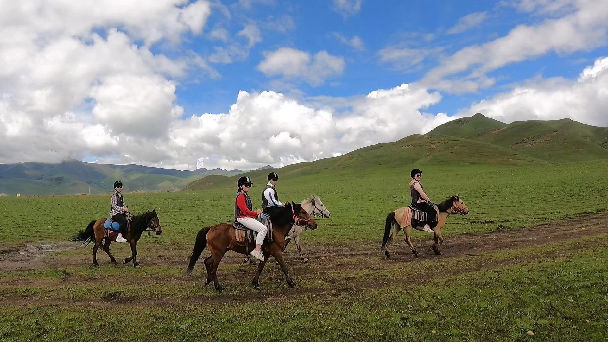
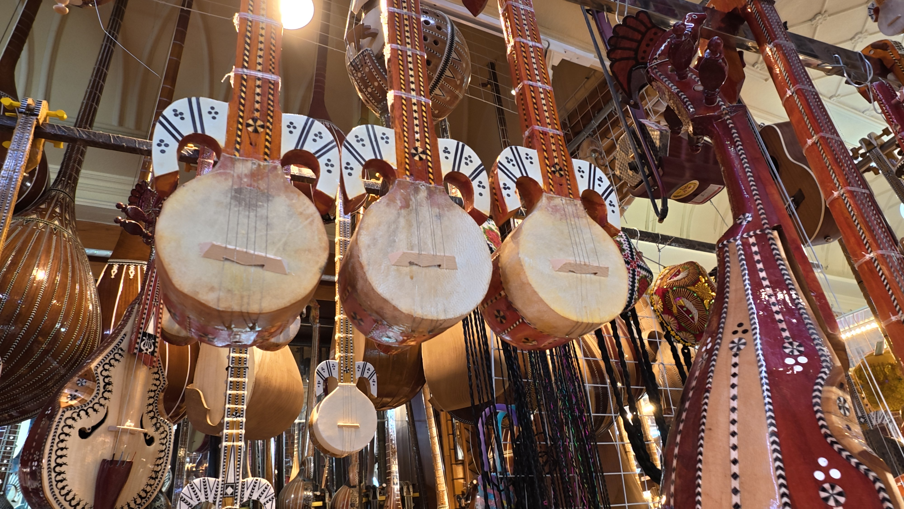
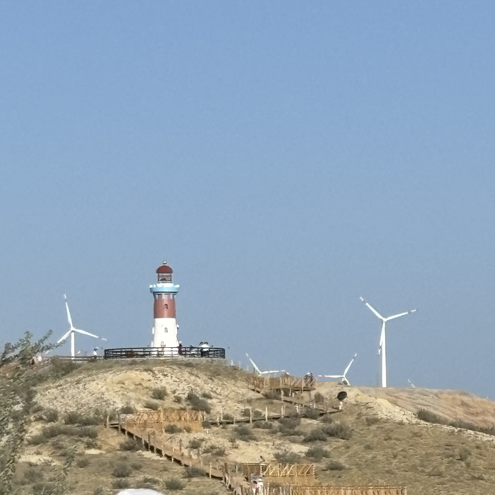
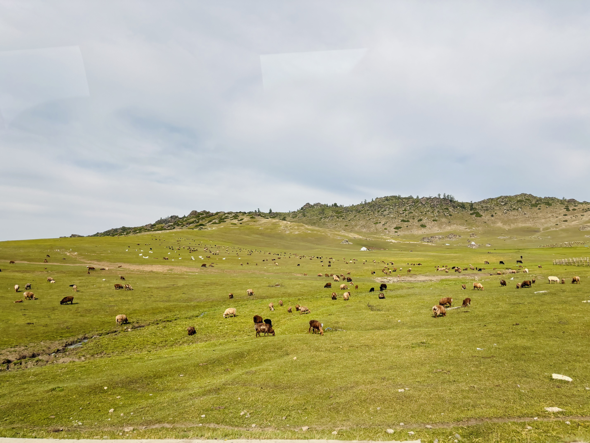
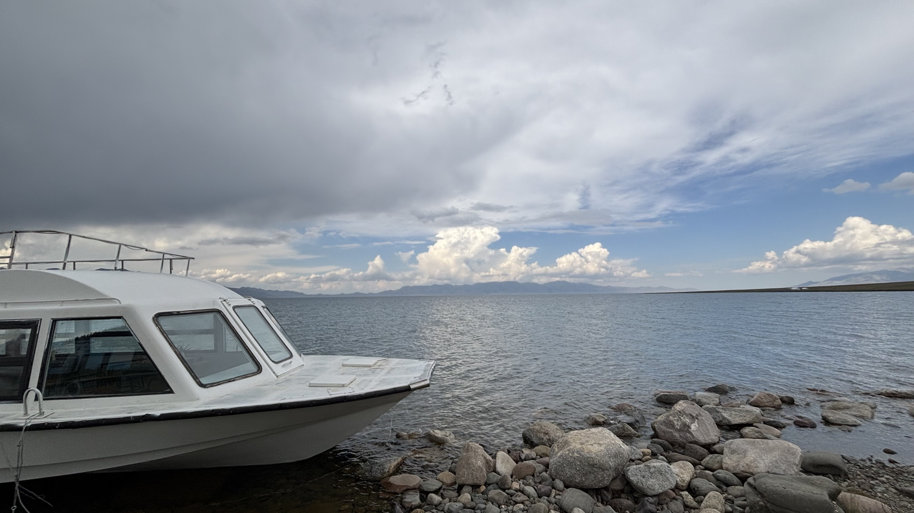

Route Atlas
用线路串联土地气息
按照地理主题拆分：海岸线、盆地都市圈、川西高原、江南古运河与北方母亲河城市。每条线路都包含影像、文字与声音采样，逐步构成个人的“星球研究档案”。
累计数据
28
省级/自治区
34
城市与自然点位
11
专题线路
87
故事切片
Footage Stream
本地上传，仅存储在浏览器

行程片段 · 1000001781
行程片段 · 1000001783
行程片段 · 302
行程片段 · 388
行程片段 · dji_mimo 180504
行程片段 · IMG_3342
行程片段 · IMG_3349
行程片段 · IMG_3475主题线路
已访问
未访问
自定义线路速记
内容仅存储在本地浏览器，可随时编辑